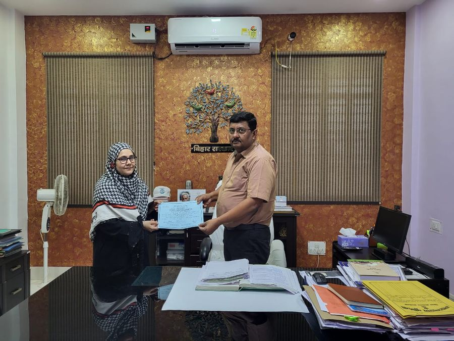
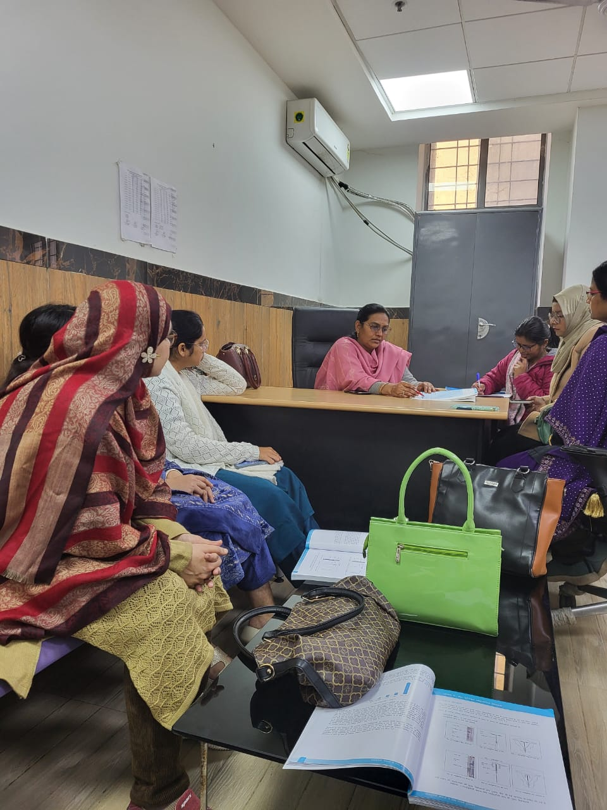
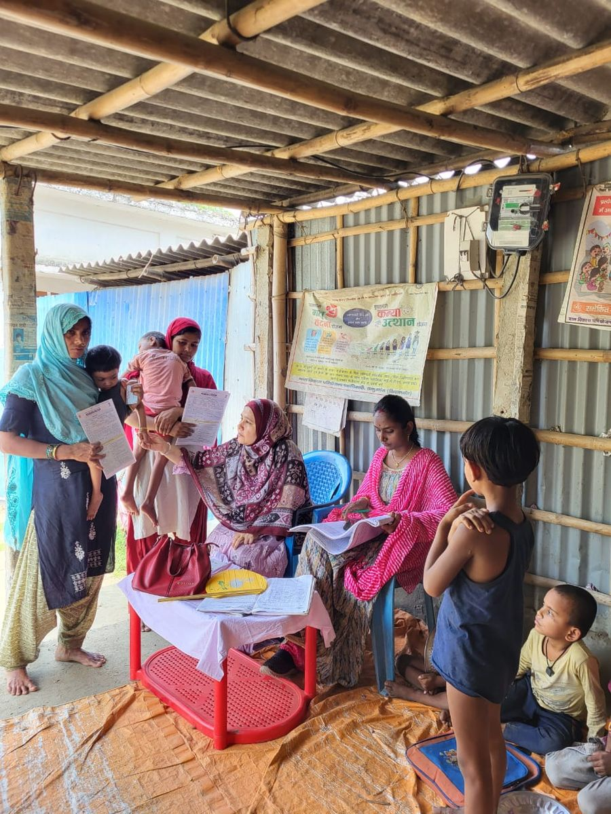
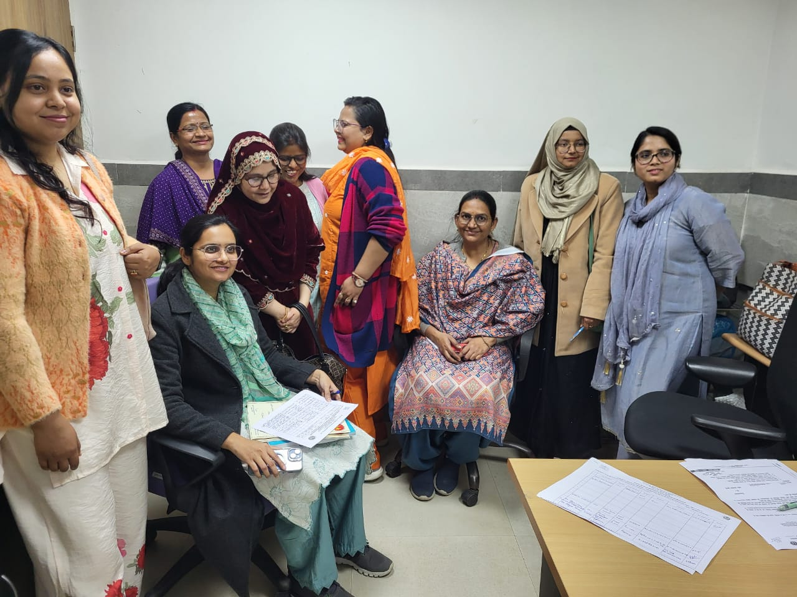
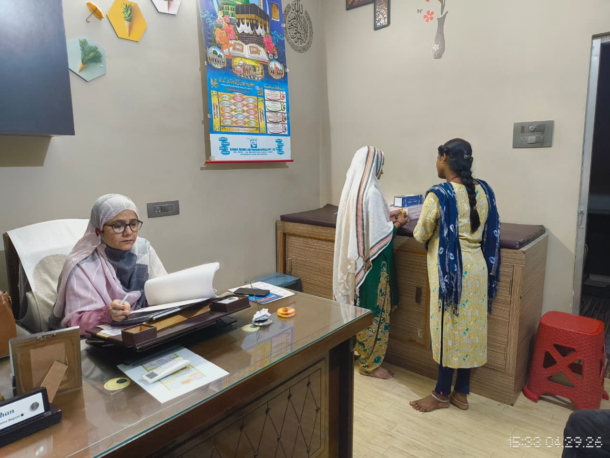
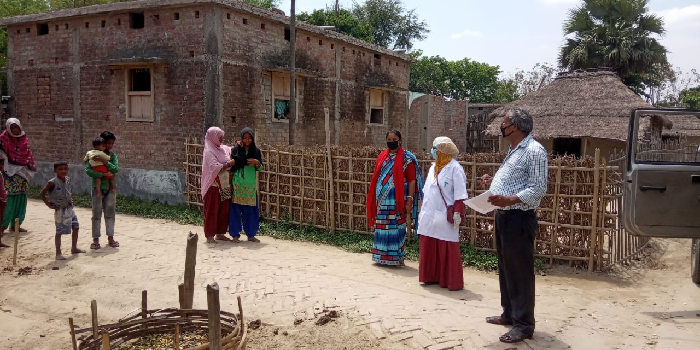
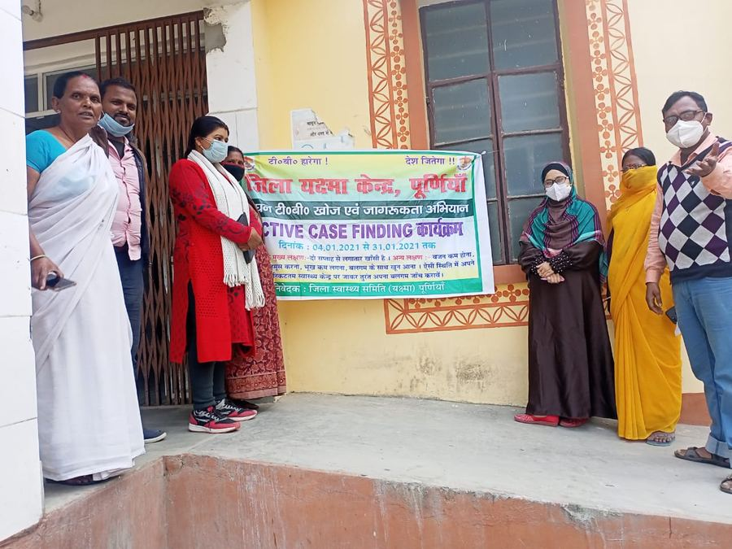

Infertility
Causes & Signs of Infertility in Females and Males, A Complete Guide
Infertility affects 1 in 6 couples in India. Understanding the root causes is the first step toward effective treatment by a specialist in Purnia, Bihar.

Dr. Shazia Khan is a soft-spoken, deeply empathetic gynaecologist who believes that healing begins long before the prescription is written, it begins the moment a patient feels truly heard.
With 12 years of experience spanning government hospitals, community health programs, and her own clinic, she brings the rigour of institutional medicine to a practice that feels genuinely personal. She keeps her consultation fees minimal and treats underprivileged patients free of cost.
From routine consultations to complex surgical care, every service designed to give women the healthcare they deserve, right here in Purnia.
(All treatments and procedures are strictly performed under the expert supervision of Dr. Shazia Khan.)






I believe every patient deserves more than a prescription, they deserve time, attention, and the feeling that someone truly cares about their wellbeing.
We take pride in the trust our patients place in us. Here are some of the stories from women who found healing at Khidmat Healthcare.
"I had a very difficult pregnancy with several complications. Dr. Shazia madam gave me so much confidence. She monitored everything closely and today I am holding my healthy baby. I can never thank her enough for her dedication."
"I was struggling with PCOS and was worried about conceiving. Dr. Shazia madam's diagnosis and treatment worked wonders. Within months, I was pregnant. She is truly the best gynaecologist in Purnia."
"I had been struggling with irregular periods and health issues. Dr. Shazia madam listened to everything patiently and started the right treatment. I felt better within weeks. A very caring and knowledgeable doctor."
"After multiple complications, we consulted Dr. Shazia. Her guidance and continuous support gave us confidence throughout. We are very thankful for her dedication. Highly recommended for any pregnancy related concerns."
Testimonials based on verified patient records. Patient privacy is our top priority.
Same-day appointments · 24×7 emergency · ₹500 only · Free for underprivileged patients
Evidence-based health insights by Dr. Shazia Khan, written to empower every woman with knowledge about her own body and her health rights.
Infertility affects 1 in 6 couples in India. Understanding the root causes is the first step toward effective treatment by a specialist in Purnia, Bihar.
PCOS is the most common hormonal disorder affecting women of reproductive age. Its impact on fertility is widely misunderstood, Dr. Shazia explains clearly.
Vaginal discharge is normal, but changes in color or smell can signal infection. Dr. Shazia Khan explains what to watch for and when to seek care.
Fatty liver disease can silently disrupt your hormones and affect fertility, a connection still overlooked by most women in India. Expert gynaecologist explains.
Irregular periods, heavy bleeding, or missed cycles, the most common concerns at a gynaecology clinic in Purnia, explained clearly by Dr. Shazia Khan.
Early detection saves lives. Dr. Shazia Khan explains the warning signs most women miss and what simple steps significantly reduce your risk of cancer.
She personally responds to patient queries on WhatsApp.
Chat on WhatsAppReal questions from real patients, answered honestly by Dr. Shazia Khan, Gynaecologist in Purnia, Bihar.
Dr. Shazia personally responds to patient queries on WhatsApp.
Ask on WhatsAppBook your appointment with Dr. Shazia Khan directly on WhatsApp, no registration, no waiting, no hassle. Just one message and your slot is confirmed.
Tap below to open a pre-filled WhatsApp message to Dr. Shazia's clinic. Works perfectly on mobile, one tap and you're connected.
Open WhatsApp NowGynaecologist & Obstetrician · 12 years of dedicated women’s healthcare serving Purnia and the surrounding districts of Bihar
"I believe every patient deserves time, not just a prescription. Healthcare must be accessible, affordable, and above all, deeply human. I treat every woman who walks into my clinic with the care I would give my own family."
Dr. Shazia Khan, M.D. · Gynaecologist · Purnia, Bihar